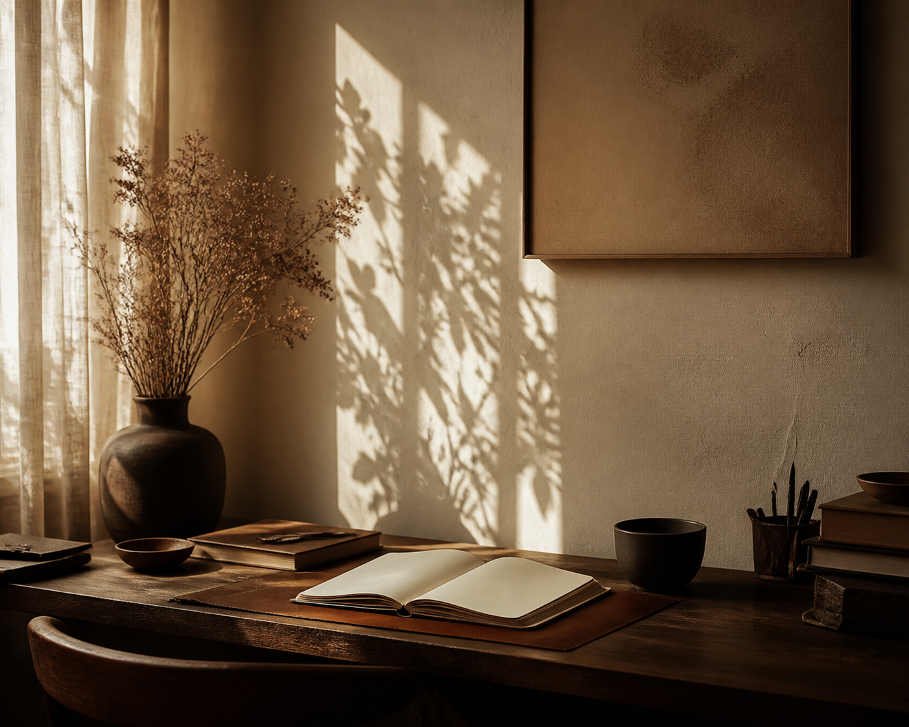

Theme groups
Every archive trail stays readable.
Themes keep the archive useful as the journal grows.
Theme archive
Themes group entries that keep returning to the same questions: work, writing, growth, discipline, and meaning.

Theme groups
Themes keep the archive useful as the journal grows.